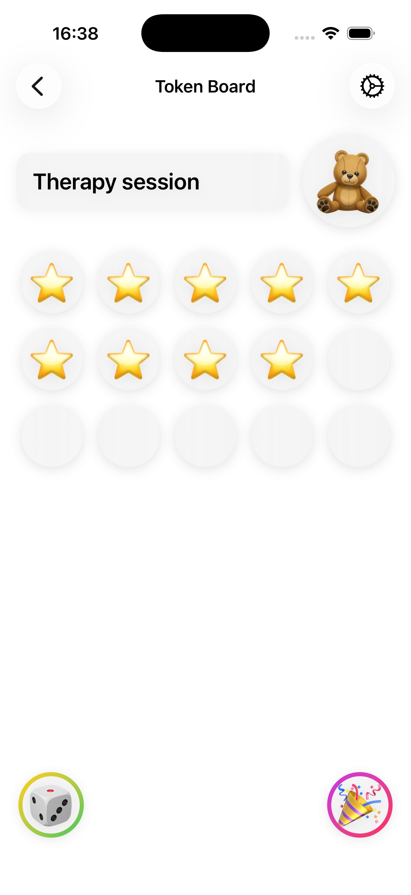
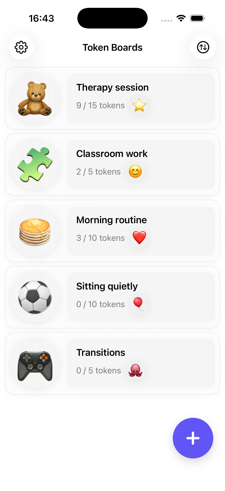
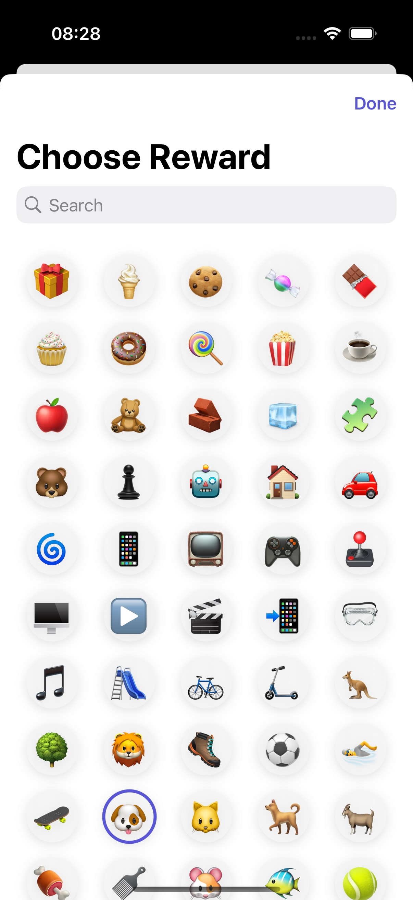
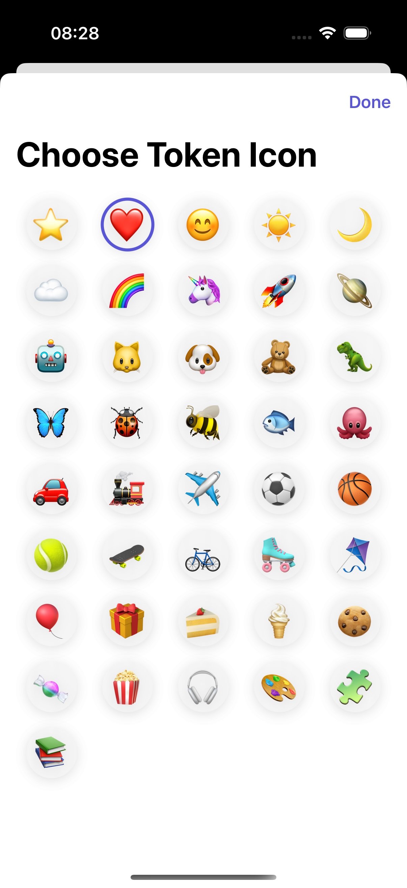
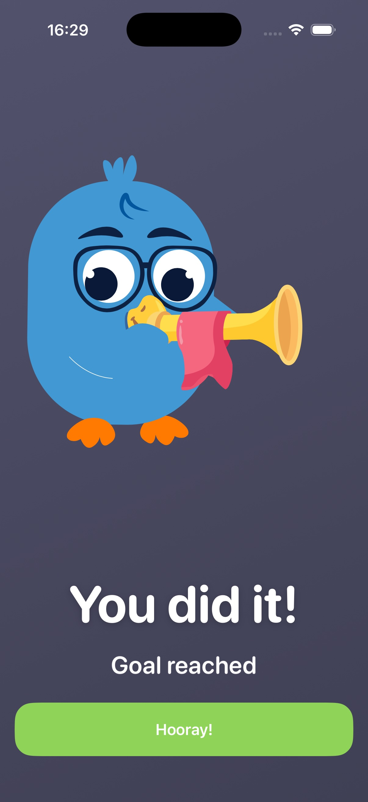

The token board app that makes good behavior click
ABA Token Board turns positive reinforcement into a game kids understand at a glance: tap to earn tokens, watch the board fill up, and celebrate the reward with confetti. Built for ABA therapy, autism support, classrooms and everyday routines at home.
Try it — Reading time
0 / 5 tokensTap the circles to earn stars, just like in the app.
Fill every token to unlock the reward.
Get the real thing — free
Download ABA Token Board free
One tap to install, one minute to build your first board. Free on the App Store, with optional Token Board Plus for power users.
A token board kids actually want to fill
Big friendly tokens, 40+ icons, custom colors and photo rewards — see the app exactly as it looks on iPhone, iPad and Mac.






How the token board works
Token boards are a well-established positive-reinforcement tool from Applied Behavior Analysis. The app follows the same three steps therapists use — no laminating, printing or lost velcro pieces.
Create a board
Pick the number of tokens (from a quick 3 up to 100), choose a token icon your child loves, and set the reward — from the built-in library or a photo of the real prize.
Tap to award tokens
When your child shows the target behavior — finishing a task, staying on-task, following a routine — tap the board. A fun animation drops the token in, no verbal reminders needed.
Celebrate the reward
When the last token lands, confetti fills the screen and the reward appears. Kids connect effort to outcome, then you reset the board and go again.
Token board guides
Practical, therapist-informed answers to the questions parents and teachers search for — and exactly how to do each one in the app.
Frequently asked questions
Quick answers about token boards, token economies and the ABA Token Board app.
What is a token board in ABA therapy?
A token board is a visual positive-reinforcement tool used in Applied Behavior Analysis (ABA). A child earns tokens — stars, smileys, favorite icons — for showing a target behavior, and when the board is full the tokens are exchanged for a chosen reward. It makes progress visible and abstract goals concrete. Learn more →
How does a token economy work for children with autism?
Tokens work like currency for good choices: the child earns them for specific behaviors and trades a set number for a preferred item or activity. A research review of token economies for children with autism and intellectual disability reports improvements in engagement and on-task behavior when token systems are used consistently. Learn more →
How many tokens should a token board start with?
Start small — most therapists begin with 3–5 tokens so the first reward comes quickly and the child learns the system, then raise the goal gradually. In the app you can set any goal from a handful of tokens up to 100. Learn more →
Is a digital token board better than a free printable token board?
Printables work, but they need printing, laminating and velcro — and the pieces wander off. A digital token board lives on the phone or iPad you already carry, resets in one tap, and adds animations and photo rewards that keep kids engaged. Learn more →
Can teachers use a token board in the classroom?
Absolutely — token boards are a staple of special-education and early-childhood classrooms for on-task behavior, transitions and routines. Create a separate board per student or activity, each with its own icons, colors and goal. Learn more →
Do token boards work for kids with ADHD?
Yes — token boards give the immediate, visual feedback the ADHD brain responds to, breaking big tasks into small, winnable steps that maintain attention and motivation. Learn more →
What rewards should I put on a token board?
The best reinforcer is whatever your child genuinely wants right now: playtime, a favorite toy, screen time, a snack or a special activity. The app has a library of visual rewards and lets you snap a photo of the real prize. Learn more →
Is the ABA Token Board app free?
Yes. ABA Token Board is free to download and use on iPhone, iPad and Mac. Optional Token Board Plus premium features are available through in-app purchases (weekly to lifetime plans). Download free →
Does the app work for nonverbal children or pre-readers?
Yes — tokens and rewards are shown as pictures and icons rather than text, so children who don't read yet see exactly what they're working for. Learn more →
Can I make different token boards for different kids or activities?
Yes — create as many personalized boards as you need, each with its own title, token icon, reward, color scheme and goal. Perfect for siblings, a therapy caseload, or separate boards for homework, chores and bedtime. Learn more →
Ready for fewer battles and more high-fives?
Build your first token board in under a minute. Free on iPhone, iPad and Mac — the confetti is included.
Download ABA Token Board free